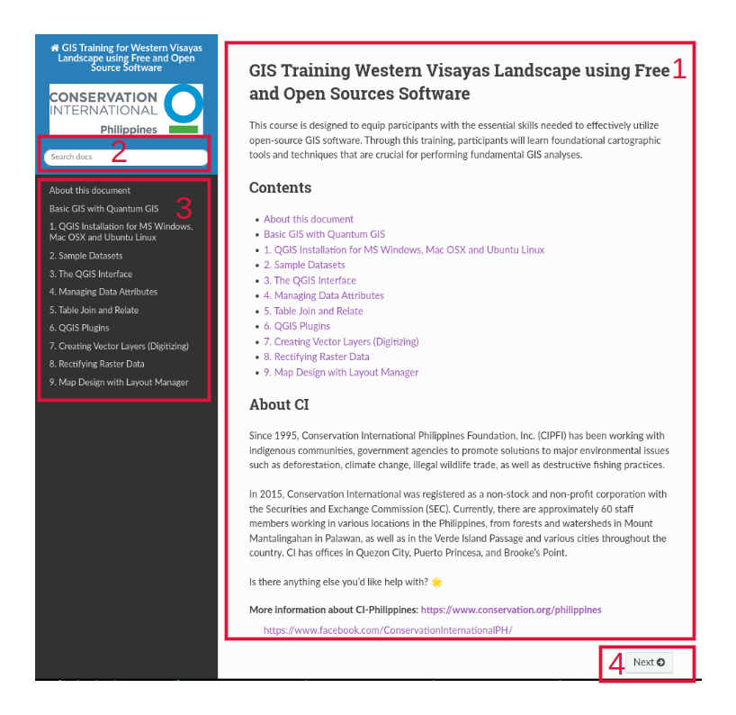

GIS Training for Southern Luzon Landscape using Free and Open Source Software
This document was designed as a supplementary material for GIS Training for Southern Luzon Landscape using Free and Open Source Software. Participants are encouraged to use this material as a reference in using the provided FOSS4G tools and sample datasets.
How to Use
{kind=link}

1 - This is the main body of the training module. It contains instructions and screenshots for easy reference.
2 - You can quickly search any word or term. Search results will direct you to the appropriate section.This section gives you an overview of exercises.
3 - You can proceed to any topic by selecting any of the links in the table of contents.
4 - The sidebar navigation allows you to go to the previous or next topic.
Conventions used
Menu and toolbar commands are shown as italic letters and (if available) preceded by an icon image, for example, or .
A series of commands are written with –>. For example: –>
 New.
New.Keystroke combinations are shown as Ctrl+B, which means press and hold the Ctrl key and then press the B key.
Code or variables are indicated by a fixed-width font, for example:
some commands or variables here
There are also youtube videos that are embedded within each topic. These are included to serve as either actual or additional guideline in doing the GIS exercises.
{kind=link}
Note
Text within this box indicates a tip, suggestion, warning or caution.
Corrections and feedback
For corrections and feedback, contact bfallarcuna at
bfallarcuna@conservation.org
License of this document
Copyright © 2026 Conservation International Philippines
Permission is granted to copy, distribute and/or modify this document under the terms of the GNU Free Documentation License, Version 1.3 or any later version published by the Free Software Foundation; with no Invariant Sections, no Front-Cover Texts, and no Back-Cover Texts.
A copy of the license is included in the section entitled “Document License”.